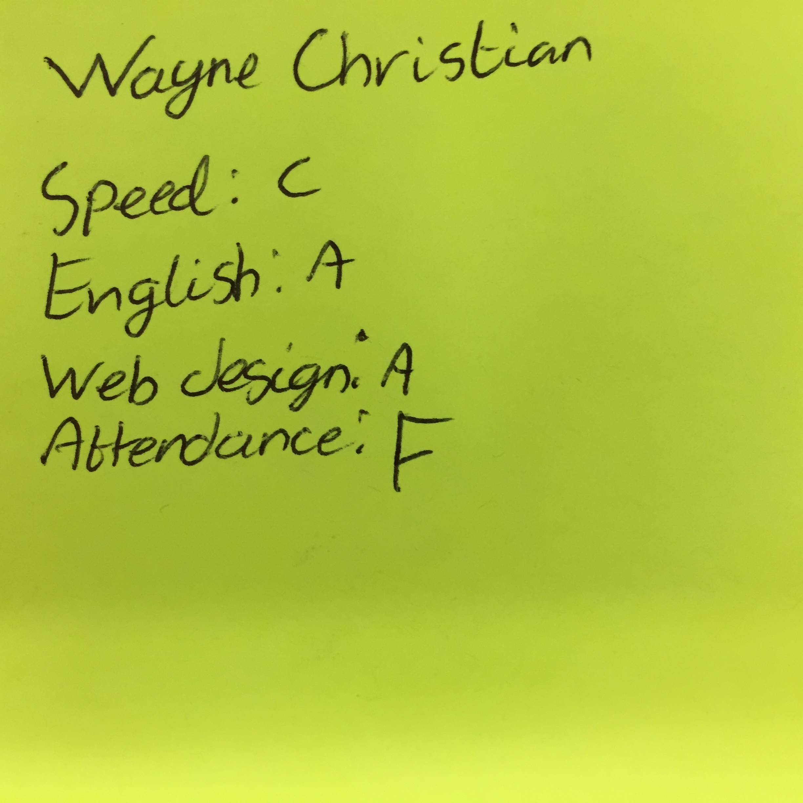
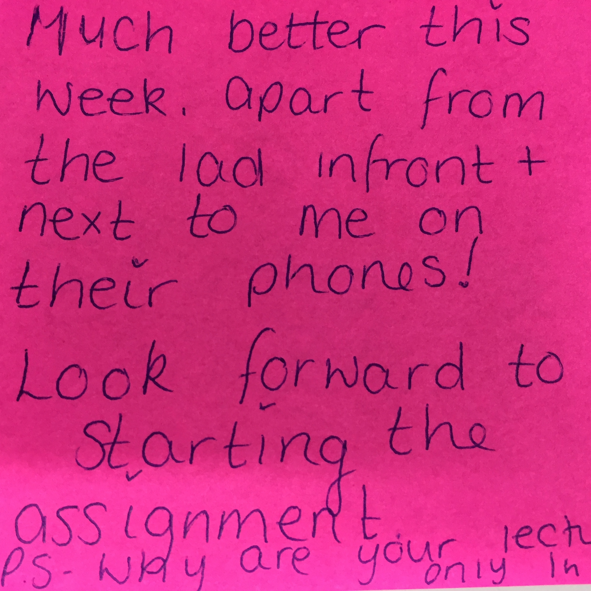
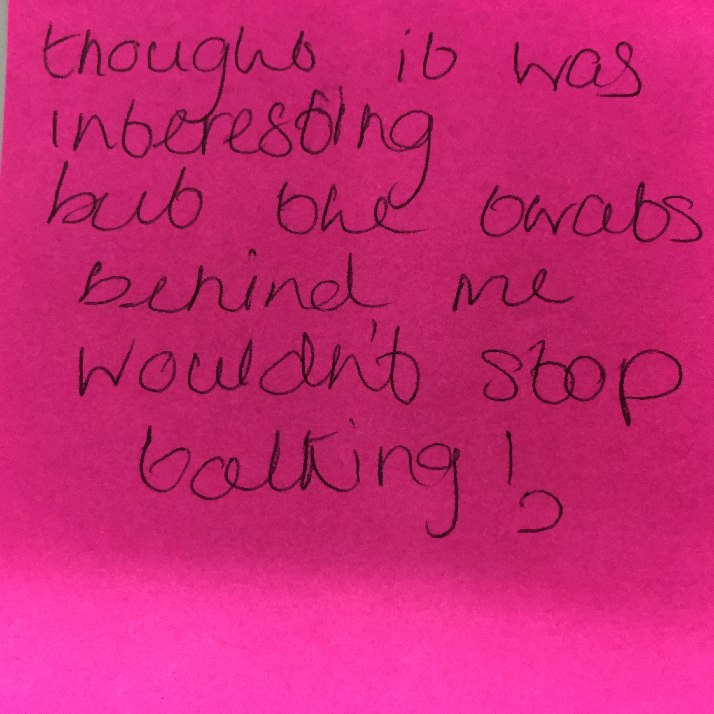
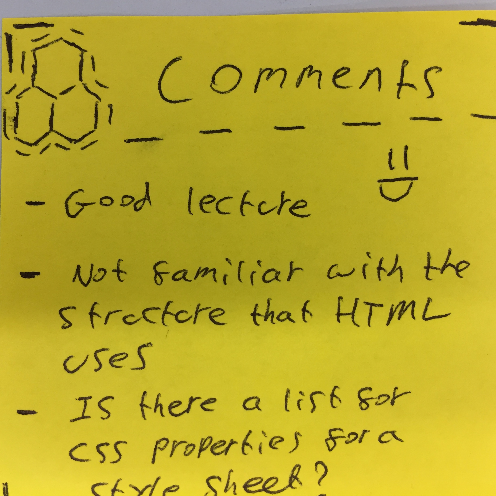

Hello
(Web Authoring CMP1130M)
Wayne Christian
Designer, Developer, Director & Senior Lecturer
Todays Lecture
Css styling
Stickies!




Sorry you will need to research that yourself!
(There are a few hints in the presenations)

Recap
Recap
Last week we looked at
html 5 & its specific tags
html5 vs html4
html5 Semantic Elements
html5 features
Tag, ID, Class, inline styles
Workshop Observations
Observations
Using the right structure
When to use a class or style
Compound styles
Developer tools
Typing ConsisTanTly
Using the right structure<

CSS Syntax
element tag, #id, .class
{
Property: property value;
font-size: 1em;
}
element tag, #id, .class
{
Property: property value;
font-size: 1em;
}
Relative paths
Relative paths
Remember that links, files and images are relative to the document being displayed by the server i.e "/assets/image.jpg" or "/css/styles.css"
No "cdrive/wayne/desktop/site"
No "bloody\backslash\paths\to\files"
We use "/" to go forward or
"../" to go back one folder
Typing ConsisTanTly
Be consistent and remember your naming conventions
NameThings in CamelCase
or Capitalisation
or replace_spaces_with_underscore
watch out for typo's <img scr="image.jpg" (src)
id, class and inline styles
Here a few examples
The id (#) attribute specifies a unique id for an HTML element (the value must be unique within the HTML document).
The class (.) attribute specifies one or more classnames for an element.
The style attribute specifies an inline style for an element.
Inline, ID(#), class(.) or tag(div)
<section id="uniqueid" class="reuseableclass" style="inlinestyles"></section>
Styles are applied with different specificity
Specificity is the means by which browsers decide which CSS property values are the most relevant to an element and, therefore, will be applied. Specificity is based on the matching rules which are composed of different sorts of CSS selectors
Compound selector
A compound selector can mix the previous 3 types using more than one class, ID and/or tag
This type of selector has a higher priority (specificity)
mytag #myid .myclass{
background-color:red;
}
Styling conventions
Apply multiple classes
<p class="myclass otherclass extraclass">Hello</p>
.myclass
{
}
.otherclass
{
}
.extraclass
{
}
Today
We will look at
Measurements pixels vs ems vs rems
CSS2 Styles (position, display)
CSS3 styles (box model, flex, grid)
Pseudo classes
Prefixes
Mobile up vs desktop down
Fixed vs Fluid vs Adaptive vs Responsive Layout
Repsonsive stye sheet, media queries
The live demos will be using the workshop design...here is one i made earlier!
Measurements
Pixels vs ems vs rems
What units of measurement should we use in our CSS?
Pixels are ignorant, don’t use them.
Use REMs for sizes and spacing.
Use EMs for media queries.
Pixels
Pixels (px) are what we’ve all become accustomed to over the years. Everyone knows what a pixel is (although the size of a pixel isn’t always the same).
Why?
read more
Accessibility over “pretty”
If you’re setting all of your font-sizes, element sizes and spacing in pixels, you’re not treating the end user with respect.
In most browsers, a user can set their default browser font-size to be a different size to the default (typically 16px). If the user sets their default to 20px, all font-sizes should scale accordingly. However, if the website explicitly sets font-sizes in pixels, a heading set at 30px will always be 30px.
That might sound great from a designer/developer point of view - but you’re not the user, stop making websites for yourself.
REMs
REMs are a way of setting font-sizes based on the font-size of the root HTML element. They also allow you to quickly scale an entire project by changing the root font-size (for example at a certain media query/screen size).
[The REM] unit represents the font-size of the root element (e.g. the font-size of the <html>element). When used on the font-size on this root element, it represents its initial value.
How to calculate PX from REM
A basic and most common example is to set html font-size is set to 10px, paragraph is set to 1.6rem.
html
{
font-size:10px;
}
1.6rem * 10px = 16px
Setting a root font-size of 10px is the most common scenario when I see people using REMs. It allows for a quick conversion between pixel values to REM values simply by dividing the number by 10.
Setting the base font-size in pixels still has the same problem as the pixel example above. Accessibility overridden
Live examples
HTML
<h1>Boom!</h1>
<p class="title">Hello</p>
<img src="assets/week1assets/html_tattoo.png"/>
CSS
h1{
text-align:center;
font-size:1em;
}
.title{
color: red;
}
img{
width:150px;
height:auto;
}
Output
Boom!
Hello

Can I Use?
for A good resource to check interoperability and compatibility
Thursdays Session
Tag, ID, Class, inline styles
selectors & Pseudo-classes
More CSS Styling
Assesment briefing doc
The CRG